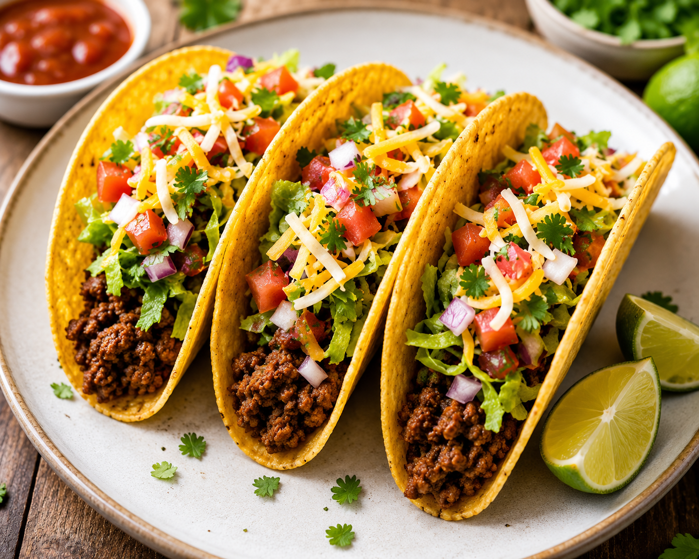

Street-Style Beef Tacos

Ingredients
- 1 lb lean ground beef (or flank steak, finely diced)
- 1 tbsp olive oil
- 1 tbsp chili powder
- 1 tsp ground cumin
- 1/2 tsp onion powder
- 1/2 tsp garlic powder
- Salt and black pepper to taste
- 12 small corn tortillas
- 1 small white onion, finely diced
- 1/2 cup fresh cilantro, chopped
- 2 lime wedges for serving
Instructions
- Heat olive oil in a large skillet over medium-high heat. Add the ground beef and cook until entirely browned, breaking it apart with a spoon as it cooks (about 6-8 minutes). Drain any excess grease.
- Turn the heat down to low. Add the chili powder, cumin, onion powder, garlic powder, salt, and pepper. Splash in 2-3 tablespoons of water to help distribute the spices. Stir well and simmer for 2 minutes until flavorful, then remove from heat.
- In a clean, dry skillet over medium-high heat, warm the corn tortillas for about 30 seconds on each side until pliable and slightly charred. Wrap them in a clean kitchen towel to keep warm.
- Assemble the tacos by stacking two warm corn tortillas per taco (the street-style way to prevent tearing). Scoop a generous spoonful of seasoned beef into the center.
- Top with a handful of finely diced white onion and fresh chopped cilantro. Serve warm with lime wedges on the side for squeezing over the top!